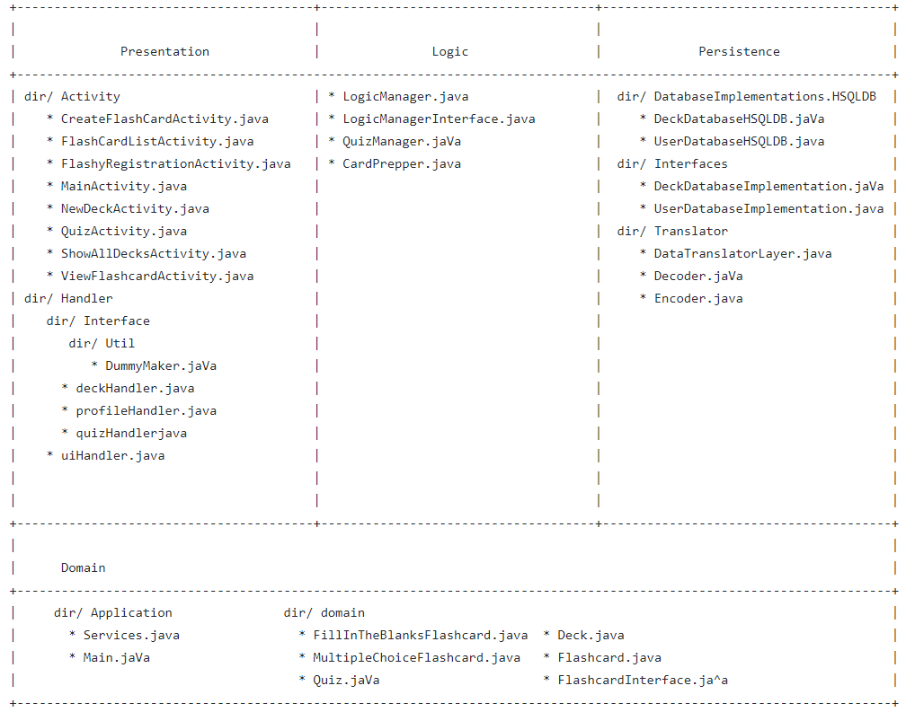

Flashy
Study anywhere, anytime!
Flashy is an application that allows anyone reviewing study material to create, view, and organize digital flashcards, from anywhere.
Flashcards are a common and successful technique used by students to study and prepare for upcoming tests and examinations. However, using a physical medium introduces numerous potential issues and complications. Physical flashcards can be lost, forgotten, or damaged before they have exhausted their use. Losing a flashcard will lead to gaps in the knowledge gained from studying, which can result in both a frustrating experience and lost marks. In addition, having access to a wide variety of physical flashcards for multiple subjects necessitates the creation and maintenance of a physical filing system.
Our solution is an application for electronic flashcards that can be viewed anywhere. The application will maintain the function and utility of flashcards, while providing enhanced features that would not be possible with the physical alternative.
The application will help users create a robust library of flashcards for review by allowing them to create flashcards with various types of questions, as well as offering several tools for their management and organization. An example of the benefits this would provide is the ability to sort flashcards into decks, and those decks into various categories, which allows for greater efficiency while studying as well as flexibility between units and subjects. Options such as timed quizzes will help the user stay motivated throughout their study session and simulate the experience of an actual test by running through multiple questions in a limited amount of time. This introduces an objective measure of progress, along with an aspect of competitiveness that will engage the user to continue studying, helping transform a tedious activity into something fun and addicting.
This product is valuable because it will aid its users significantly in reviewing unfamiliar material, and preparing for exams, tests, and assignments. Additionally, since it will be developed for Android, it will be easily accessible to those who need it due to the popularity and ubiquity of the Android operating system. In addition, the application will attempt to rectify some of the problems that similar products have failed to address and in doing so, providing an improved user experience.
Features
Regular Flashcards
Users are able to create and manage flashcards with a front and back. The front of the flashcard will display the user’s question and the back will display the user’s answer. Users will be able to edit or delete this flashcard at will.
Multiple Choice Flashcards
Users are able to create and manage a flashcard with up to 4 possible answers. The front of the flashcard will display the user’s question along with the 4 possible answers. The one correct answer will be displayed on the back of the flashcard. Users will be able to edit or delete this flashcard at will.
Fill-in-the-blank Flashcards
Users will be able to create and manage a fill-in-the-blank flashcard where one word of the flashcard’s question will be hidden. The user will be able to create a question and choose which one of the words will be hidden with the answer on the back of the flashcard. Users will be able to edit or delete this flashcard at will.
Flashcard Decks
Users will be able to create and manage decks consisting of different types of flashcards. Users will be able to create a deck and name it whatever they like. This allows the users to keep their flashcards organized. Users will also be able edit and delete their decks at will.
Quiz Mode
Users will be able to take a quiz with a deck of flashcards of their choosing. This will allow the user to test themselves on how much they know the material of their flashcards. Quiz Mode will keep track of how many correct and incorrect answers the user gave. This will indicate how well the user knows the material and if they need to continue studying the deck.
User Profiles
Users will be able to create and manage different user profiles. This will allow the user to manage which decks of flashcards they have access to in case there happens to be more than one user on a given device. The user accounts are also password protected so users can ensure the security of their precious study material.
Flashy's Architecture
Check out the auto-generated website with Sphinx!
Contributors
@kyleduque @jasima @budhias @jungc @arjunwam @patelpk3